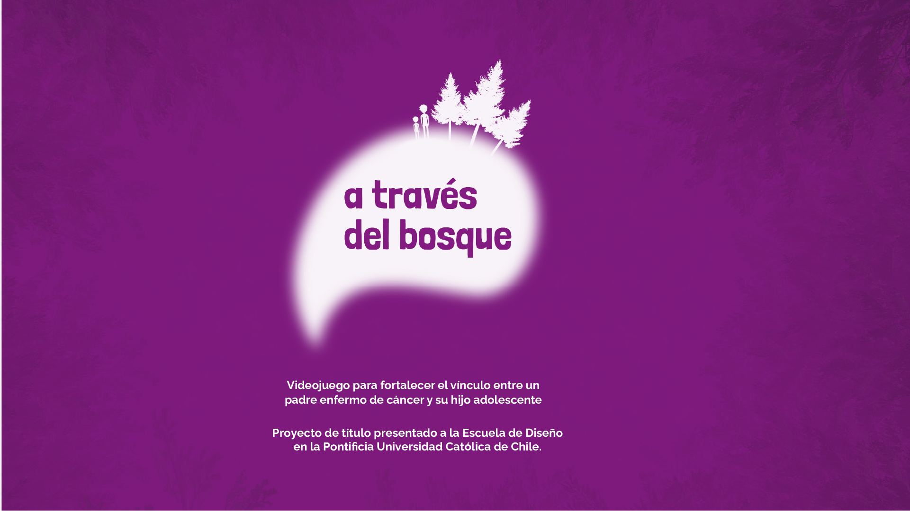
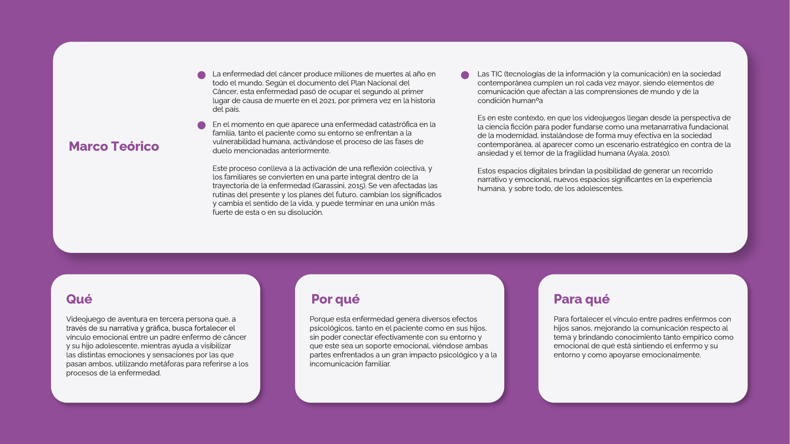
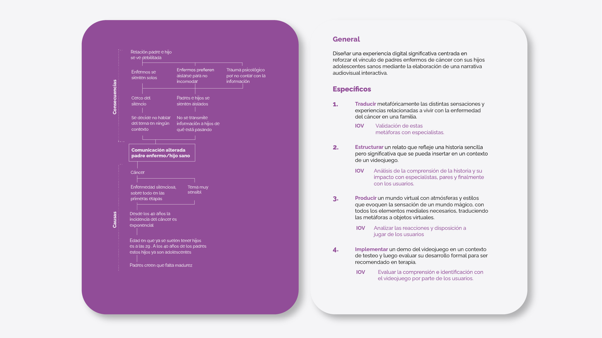
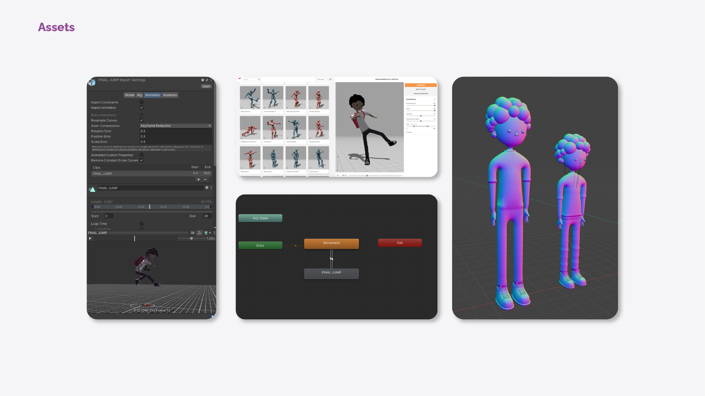
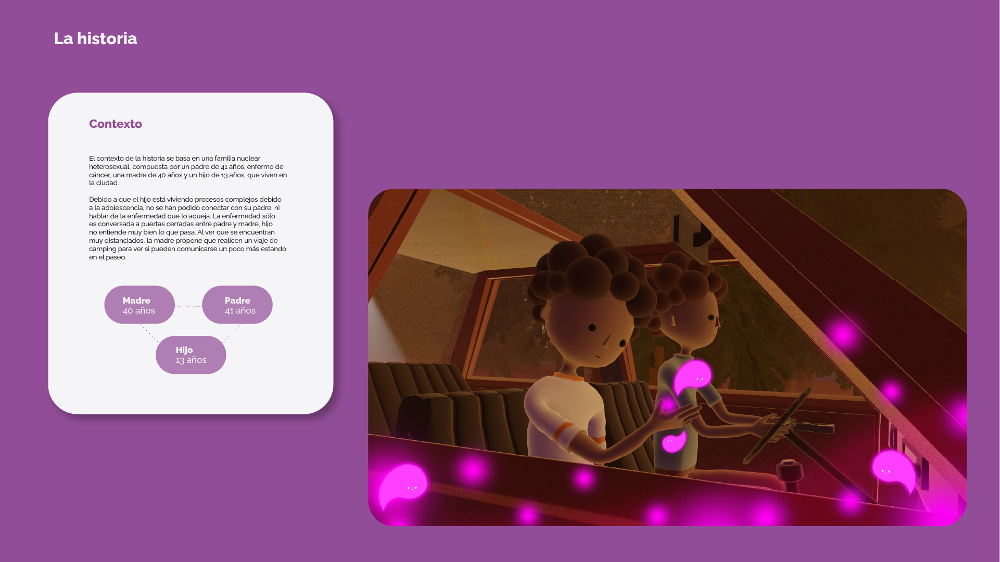
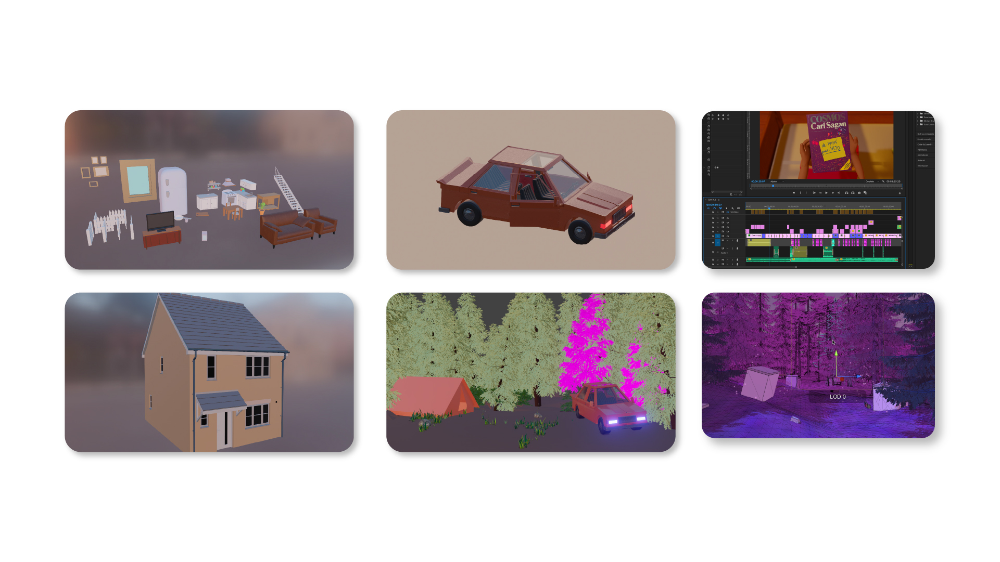

Videogame
A través del bosque

Descripción del proyecto
A través del bosque es una demo de videojuego realizada para el proyecto de título de la carrera de Diseño Integral. Este videojuego en tercera persona se basa en la historia de un padre con cáncer y su hijo, que irán aprendiendo a comunicarse respecto a la enfermedad.
Proceso de trabajo
El desarrollo de ATDB se realizó desde cero, planificando la experiencia, investigando y entrevistando a psico-oncólogos y a personas que hayan pasado por este proceso. Luego se desarrollaron los personajes y escenarios en Blender, montando el videojuego en Unity.





